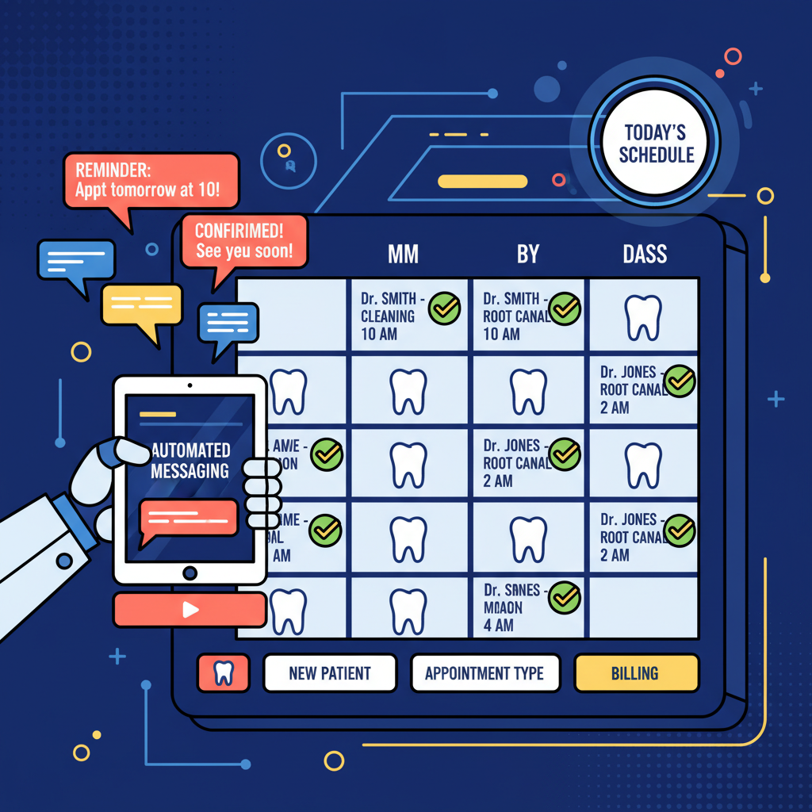

The vertical SaaS built specifically for independent dental practices (1-4 chairs). Consolidate patient self-booking, automated text recalls, and insurance pre-authorization tracking in a secure, HIPAA-compliant PostgreSQL database architecture. Zero-IT setup required.

Chairside bypasses the feature bloat of legacy dental software to solve the three highest-leverage tasks that choke small clinic performance.
Embed a lightweight booking scheduler on your clinic website or Google profile in seconds. Reads active chair availability in real-time to eliminate overlap. Writes bookings directly back to Dentrix, Eaglesoft, or Open Dental.
Identifies patients due for six-month hygiene checkups and sends custom text links to secure a slot in seconds. Fully compliant with 10DLC registration, maintaining over 99% carrier delivery rates.
An automated tracker replacing physical sticky notes. Connects directly to insurance clearinghouses to monitor pending treatment plans. Automatically texts patients to book appointments the moment approvals arrive.
Our database is engineered for millisecond response times under scale. Explore our standard Postgres table layouts, indexes, and relationship models.
Stores dentist waitlist signups and general practice inquiries from our public acquisition funnels.
idx_beta_signups_status_created
to fetch active signups instantly by submission date, preventing seq scans on large waitlist campaigns.
| Column Name | Data Type | Constraints | Description |
|---|---|---|---|
| id | BIGSERIAL | PRIMARY KEY | Auto-incrementing unique record key. |
| dentist_name | VARCHAR(255) | NOT NULL | Full name of the practicing dentist owner. |
| clinic_name | VARCHAR(255) | NOT NULL | Commercial name of the clinic. |
| VARCHAR(255) | NOT NULL, UNIQUE | Verified professional contact email. | |
| phone | VARCHAR(50) | NOT NULL | Mobile/Clinic telephone for SMS notifications. |
| chair_count | INTEGER | CHECK (between 1 and 50) | Size indicator (1-4 chairs is our sweet spot). |
| current_software | VARCHAR(100) | DEFAULT 'None' | Active Practice Management System in use. |
Root tenant record representing a distinct clinic location. Enforces separation of patient data.
| Column Name | Data Type | Constraints | Description |
|---|---|---|---|
| id | UUID | PRIMARY KEY, DEFAULT uuid_generate_v4() | Unique unguessable identifier. |
| name | VARCHAR(255) | NOT NULL | Registered clinic brand name. |
| pms_type | VARCHAR(50) | CHECK (dentrix, eaglesoft, open_dental, etc) | Identifies integration pipeline path. |
| timezone | VARCHAR(100) | NOT NULL | Used for text delivery timing controls. |
Stores patient records synced from local desktop databases. Serves as our message target lookup.
idx_patients_lookup
on last name and first name for fast lookup auto-completes in the front-office search bar.
| Column Name | Data Type | Constraints | Description |
|---|---|---|---|
| id | UUID | PRIMARY KEY | Internal patient UUID. |
| clinic_id | UUID | NOT NULL, REFERENCES clinics(id) | Foreign key linking patient to tenant. |
| pms_patient_id | VARCHAR(100) | NOT NULL | ID mapping patient to their on-premise PMS record. |
| first_name | VARCHAR(100) | NOT NULL | Patient first name. |
| last_name | VARCHAR(100) | NOT NULL | Patient last name. |
| phone | VARCHAR(50) | NOT NULL | Mobile number synced for automatic SMS delivery. |
Stores booking records, chair positions, and scheduled times. Controls overlap prevention.
idx_appointments_clinic_time
to scan for schedule availability under 5 milliseconds during concurrent patient booking checks.
| Column Name | Data Type | Constraints | Description |
|---|---|---|---|
| id | UUID | PRIMARY KEY | Unique record key. |
| patient_id | UUID | REFERENCES patients(id) | Patient scheduling the chair. |
| chair_number | INTEGER | CHECK (between 1 and 10) | Assigned dental chair (operatory). |
| appointment_type | VARCHAR(50) | CHECK (hygiene, restorative, emergency, etc) | Service type to determine length blocks. |
| start_time | TIMESTAMPTZ | NOT NULL | Timestamp of appointment start. |
| end_time | TIMESTAMPTZ | NOT NULL | Timestamp of appointment conclusion. |
Powering our pre-authorization Kanban dashboard, tracking clinical claims from submission to acceptance.
idx_pre_auth_aging applies specifically to
active 'submitted' entries, raising instant alerts for approvals outstanding for over 14 days.
| Column Name | Data Type | Constraints | Description |
|---|---|---|---|
| id | UUID | PRIMARY KEY | Internal unique key. |
| patient_id | UUID | REFERENCES patients(id) | Associated patient requiring treatment. |
| treatment_code | VARCHAR(50) | NOT NULL | Standard ADA dental procedure code (e.g., D2740). |
| estimated_cost_cents | BIGINT | NOT NULL, DEFAULT 0 | Out-of-pocket prediction stored in cents. |
| status | VARCHAR(50) | CHECK (submitted, action_required, approved, etc) | Determines visual Kanban column placement. |
| reference_number | VARCHAR(100) | NULLABLE | Insurance confirmation identifier. |
Maintains continuing care recall logs, trigger dates, and status feedback from Twilio webhooks.
status, scheduled_send_at
enables our automated cron script to query matching patient rows instantly, bypassing full-table scans.
| Column Name | Data Type | Constraints | Description |
|---|---|---|---|
| id | UUID | PRIMARY KEY | Unique trigger record identifier. |
| patient_id | UUID | REFERENCES patients(id) | Patient targeted for recall campaign. |
| status | VARCHAR(50) | CHECK (scheduled, sent, delivered, responded, failed) | Message state inside the automated recall pipeline. |
| scheduled_send_at | TIMESTAMPTZ | NOT NULL | Planned dispatch date (e.g., exactly 6 months post-cleaning). |
| booking_id | UUID | REFERENCES appointments(id) | Links recall success back to booked appointment. |
Click any database node to jump directly to its schema definitions, primary keys, and field specifications.
Trigger real backend actions to watch API request payloads compile and observe exactly how PostgreSQL indexes query these operations.
{
"event": "appointment.booked",
"clinic_id": "0a4f7000-8888-4444-bc84-99a38ff12026",
"patient": {
"first_name": "Sarah",
"last_name": "Miller",
"email": "sarah.miller@example.com",
"phone": "206-555-0198",
"dob": "1991-08-14"
},
"appointment": {
"chair_number": 3,
"appointment_type": "hygiene",
"start_time": "2026-05-22T09:00:00-07:00",
"end_time": "2026-05-22T10:00:00-07:00",
"notes": "Prefers morning spots, requested teeth whitening info"
}
}
-- 1. Resolve or Create Patient Profile
INSERT INTO patients (clinic_id, pms_patient_id, first_name, last_name, email, phone, dob)
VALUES ('0a4f7000-8888-4444-bc84-99a38ff12026', 'PMS-89242', 'Sarah', 'Miller', 'sarah.miller@example.com', '206-555-0198', '1991-08-14')
ON CONFLICT (clinic_id, pms_patient_id)
DO UPDATE SET email = EXCLUDED.email, phone = EXCLUDED.phone
RETURNING id;
-- 2. Secure Appointment with Optimistic Lock Checking (Optimized Index: idx_appointments_clinic_time)
INSERT INTO appointments (clinic_id, patient_id, chair_number, appointment_type, start_time, end_time, status, notes)
SELECT '0a4f7000-8888-4444-bc84-99a38ff12026', '550e8400-e29b-41d4-a716-446655440000', 3, 'hygiene', '2026-05-22 09:00:00-07', '2026-05-22 10:00:00-07', 'booked_online', 'Prefers morning spots'
WHERE NOT EXISTS (
SELECT 1 FROM appointments
WHERE clinic_id = '0a4f7000-8888-4444-bc84-99a38ff12026'
AND chair_number = 3
AND start_time < '2026-05-22 10:00:00-07'
AND end_time > '2026-05-22 09:00:00-07'
)
RETURNING id;
-- ============================================================================
-- Chairside Practice Operating System
-- Core Database Schema (PostgreSQL / Supabase)
-- Author: Chairside Database Performance & Optimization Team
-- Target Platform: Supabase PostgreSQL (HIPAA Compliant Configuration)
-- Generated: May 20, 2026
-- ============================================================================
BEGIN;
-- Enable UUID extension for secure, unguessable public identifiers
CREATE EXTENSION IF NOT EXISTS "uuid-ossp";
-- ============================================================================
-- 1. Table: clinics (Multi-tenant partition)
-- ============================================================================
CREATE TABLE IF NOT EXISTS clinics (
id UUID PRIMARY KEY DEFAULT uuid_generate_v4(),
name VARCHAR(255) NOT NULL,
pms_type VARCHAR(50) NOT NULL CHECK (pms_type IN ('dentrix', 'eaglesoft', 'open_dental', 'custom', 'none')),
timezone VARCHAR(100) NOT NULL DEFAULT 'America/New_York',
created_at TIMESTAMPTZ NOT NULL DEFAULT NOW(),
updated_at TIMESTAMPTZ NOT NULL DEFAULT NOW()
);
-- ============================================================================
-- 2. Table: beta_signups
-- ============================================================================
CREATE TABLE IF NOT EXISTS beta_signups (
id BIGSERIAL PRIMARY KEY,
dentist_name VARCHAR(255) NOT NULL,
clinic_name VARCHAR(255) NOT NULL,
email VARCHAR(255) NOT NULL UNIQUE,
phone VARCHAR(50) NOT NULL,
chair_count INTEGER NOT NULL CHECK (chair_count BETWEEN 1 AND 50),
current_software VARCHAR(100) NOT NULL DEFAULT 'None / Spreadsheets',
signup_status VARCHAR(50) NOT NULL DEFAULT 'pending' CHECK (signup_status IN ('pending', 'contacted', 'onboarded', 'archived')),
created_at TIMESTAMPTZ NOT NULL DEFAULT NOW()
);
-- Index for searching/filtering signups by status and timing
CREATE INDEX IF NOT EXISTS idx_beta_signups_status_created ON beta_signups(signup_status, created_at DESC);
CREATE INDEX IF NOT EXISTS idx_beta_signups_email ON beta_signups(email);
-- ============================================================================
-- 3. Table: patients (Synced from PMS)
-- ============================================================================
CREATE TABLE IF NOT EXISTS patients (
id UUID PRIMARY KEY DEFAULT uuid_generate_v4(),
clinic_id UUID NOT NULL REFERENCES clinics(id) ON DELETE CASCADE,
pms_patient_id VARCHAR(100) NOT NULL, -- External ID from Dentrix/Eaglesoft/Open Dental
first_name VARCHAR(100) NOT NULL,
last_name VARCHAR(100) NOT NULL,
email VARCHAR(255),
phone VARCHAR(50) NOT NULL,
dob DATE NOT NULL,
is_active BOOLEAN NOT NULL DEFAULT TRUE,
created_at TIMESTAMPTZ NOT NULL DEFAULT NOW(),
updated_at TIMESTAMPTZ NOT NULL DEFAULT NOW(),
UNIQUE (clinic_id, pms_patient_id)
);
-- Critical indexes for performance on patient joins and communication lookups
CREATE INDEX IF NOT EXISTS idx_patients_clinic_id ON patients(clinic_id);
CREATE INDEX IF NOT EXISTS idx_patients_lookup ON patients(last_name, first_name);
CREATE INDEX IF NOT EXISTS idx_patients_phone ON patients(phone);
-- ============================================================================
-- 4. Table: appointments (Self-Bookings and PMS Schedulers)
-- ============================================================================
CREATE TABLE IF NOT EXISTS appointments (
id UUID PRIMARY KEY DEFAULT uuid_generate_v4(),
clinic_id UUID NOT NULL REFERENCES clinics(id) ON DELETE CASCADE,
patient_id UUID REFERENCES patients(id) ON DELETE SET NULL,
pms_appointment_id VARCHAR(100), -- Nullable for raw self-bookings before PMS sync
chair_number INTEGER NOT NULL CHECK (chair_number BETWEEN 1 AND 10),
appointment_type VARCHAR(50) NOT NULL DEFAULT 'hygiene' CHECK (appointment_type IN ('hygiene', 'restorative', 'emergency', 'consultation')),
status VARCHAR(50) NOT NULL DEFAULT 'pending_sync' CHECK (status IN ('booked_online', 'pending_sync', 'confirmed', 'cancelled', 'no_show')),
start_time TIMESTAMPTZ NOT NULL,
end_time TIMESTAMPTZ NOT NULL,
notes TEXT,
created_at TIMESTAMPTZ NOT NULL DEFAULT NOW(),
updated_at TIMESTAMPTZ NOT NULL DEFAULT NOW(),
CONSTRAINT chk_appointment_times CHECK (end_time > start_time)
);
-- Crucial indexes for rendering schedule grids (Range filters & joins)
CREATE INDEX IF NOT EXISTS idx_appointments_clinic_time ON appointments(clinic_id, start_time DESC);
CREATE INDEX IF NOT EXISTS idx_appointments_patient_id ON appointments(patient_id);
CREATE INDEX IF NOT EXISTS idx_appointments_status ON appointments(status);
-- ============================================================================
-- 5. Table: pre_authorizations (Visual tracking Kanban)
-- ============================================================================
CREATE TABLE IF NOT EXISTS pre_authorizations (
id UUID PRIMARY KEY DEFAULT uuid_generate_v4(),
clinic_id UUID NOT NULL REFERENCES clinics(id) ON DELETE CASCADE,
patient_id UUID NOT NULL REFERENCES patients(id) ON DELETE CASCADE,
treatment_code VARCHAR(50) NOT NULL, -- e.g., D2740 (Crown) or D6010 (Implant)
treatment_description VARCHAR(255) NOT NULL,
insurance_carrier VARCHAR(150) NOT NULL,
estimated_cost_cents BIGINT NOT NULL DEFAULT 0, -- Stored in cents to avoid float rounding issues
approved_amount_cents BIGINT DEFAULT NULL,
status VARCHAR(50) NOT NULL DEFAULT 'submitted' CHECK (status IN ('draft', 'submitted', 'aging_delay', 'action_required', 'approved', 'declined')),
reference_number VARCHAR(100),
submitted_at TIMESTAMPTZ NOT NULL DEFAULT NOW(),
last_checked_at TIMESTAMPTZ,
approved_at TIMESTAMPTZ,
created_at TIMESTAMPTZ NOT NULL DEFAULT NOW(),
updated_at TIMESTAMPTZ NOT NULL DEFAULT NOW()
);
-- Indexes for Kanban dashboard tracking and aging alerts
CREATE INDEX IF NOT EXISTS idx_pre_auth_clinic_status ON pre_authorizations(clinic_id, status);
CREATE INDEX IF NOT EXISTS idx_pre_auth_patient_id ON pre_authorizations(patient_id);
CREATE INDEX IF NOT EXISTS idx_pre_auth_aging ON pre_authorizations(submitted_at DESC) WHERE status = 'submitted';
-- ============================================================================
-- 6. Table: automated_recalls (Continuing Care Loops)
-- ============================================================================
CREATE TABLE IF NOT EXISTS automated_recalls (
id UUID PRIMARY KEY DEFAULT uuid_generate_v4(),
clinic_id UUID NOT NULL REFERENCES clinics(id) ON DELETE CASCADE,
patient_id UUID NOT NULL REFERENCES patients(id) ON DELETE CASCADE,
recall_type VARCHAR(50) NOT NULL DEFAULT 'hygiene_6_month',
status VARCHAR(50) NOT NULL DEFAULT 'scheduled' CHECK (status IN ('scheduled', 'sent', 'delivered', 'responded', 'failed', 'paused')),
scheduled_send_at TIMESTAMPTZ NOT NULL,
sent_at TIMESTAMPTZ,
booking_id UUID REFERENCES appointments(id) ON DELETE SET NULL, -- Connects recall success back to booking
created_at TIMESTAMPTZ NOT NULL DEFAULT NOW(),
updated_at TIMESTAMPTZ NOT NULL DEFAULT NOW()
);
-- Indexes for cron jobs querying matching send triggers
CREATE INDEX IF NOT EXISTS idx_recalls_send_trigger ON automated_recalls(status, scheduled_send_at) WHERE status = 'scheduled';
CREATE INDEX IF NOT EXISTS idx_recalls_patient_id ON automated_recalls(patient_id);
-- ============================================================================
-- Row Level Security (RLS) Setup for HIPAA Compliance
-- ============================================================================
ALTER TABLE clinics ENABLE ROW LEVEL SECURITY;
ALTER TABLE patients ENABLE ROW LEVEL SECURITY;
ALTER TABLE appointments ENABLE ROW LEVEL SECURITY;
ALTER TABLE pre_authorizations ENABLE ROW LEVEL SECURITY;
ALTER TABLE automated_recalls ENABLE ROW LEVEL SECURITY;
ALTER TABLE beta_signups ENABLE ROW LEVEL SECURITY;
-- Beta Signups: Anyone (anon) can insert signups; only authenticated staff can view
CREATE POLICY signup_insert_policy ON beta_signups
FOR INSERT WITH CHECK (true);
CREATE POLICY signup_select_policy ON beta_signups
FOR SELECT TO authenticated USING (true);
-- Clinics & Clinical Tables: Lock access strictly to authenticated clinic tenants
CREATE POLICY clinic_tenant_policy ON clinics
FOR ALL TO authenticated USING (id = auth.uid());
CREATE POLICY patients_tenant_policy ON patients
FOR ALL TO authenticated USING (clinic_id = auth.uid());
CREATE POLICY appointments_tenant_policy ON appointments
FOR ALL TO authenticated USING (clinic_id = auth.uid());
CREATE POLICY pre_auth_tenant_policy ON pre_authorizations
FOR ALL TO authenticated USING (clinic_id = auth.uid());
CREATE POLICY recalls_tenant_policy ON automated_recalls
FOR ALL TO authenticated USING (clinic_id = auth.uid());
COMMIT;
Register your independent clinic (1-4 chairs) for the private cohort of 10 design partners launching soon.
| Clinic & Dentist | Size | PMS System | Time (UTC) |
|---|